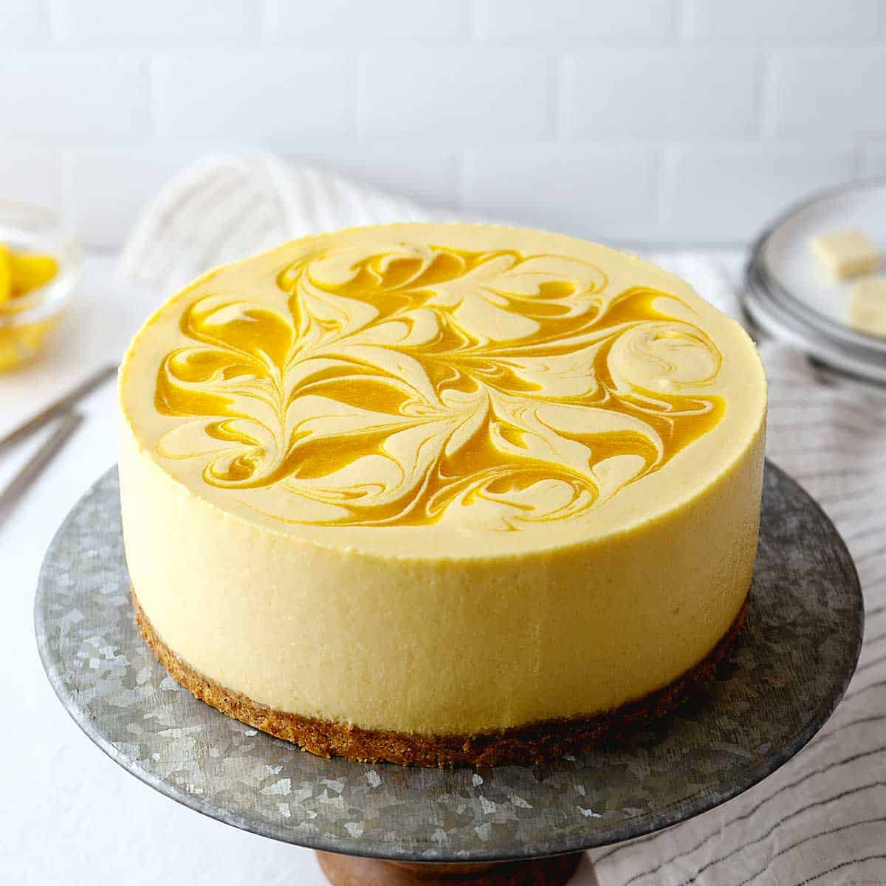

<!DOCTYPE html>
<html>
    <head>
        <meta charset="utf-8">
        <meta http-equiv="X-UA-Compatible" content="IE=edge">
        <title></title>
        <meta name="description" content="">
        <meta name="viewport" content="width=device-width, initial-scale=1">
        <link rel="stylesheet" href="./style.css"/>
        <title> Recipe Form </title>
    </head>
</html>
  <body>
    <header>Mango Cheesecake Recipe</header>
    <section>
        <nav>
        <div class="responsive">
        <div class="img_card">
            <a href="./images/Mango.jpg" target="_blank">
            
            </a>
        </div>  
    </nav>
        <article>
            <h3>Ingredients</h3>
            <li>250g digestive biscuits, or graham crackers</li>
            <li>125g unsalted butter</li>
            <li>600g full fat cream cheese, at room temperature</li>
            <li>75g icing sugar</li> 
            <li>300ml cold double cream/heavy whipping cream</li>
            <li>100ml mango puree</li>
            <li>1 orange</li>
            <li>2 mango's</li>
            <li>40g white sugar</li>
            <li>1tbsp cornflour</li>
            <li>1tbsp water</li>
            <h3>Directions</h3>
            <p>Start by crushing the biscuits in a sealed bag with a rolling pin or in a food processor until they're finely ground. Then transfer to a bowl
                Melt the butter on a stove or in the microwave, and then pour it all over the crushed biscuits. Mix until it resembles wet sand, then transfer it all into a 8"/20cm round springform tin. I like to place a layer of baking paper/parchment paper at the base of the tin for easy removal later
                Smooth and compress the biscuit mixture into an even layer with any flat object of choice. Then place into the refrigerator for a minimum of 30 minutes.For the filling, add the cream cheese, mango puree, icing sugar, orange zest, and vanilla to a large mixing bowl. Whisk until smooth
                In a separate mixing bowl, whisk the double cream to stiff peaks. Avoid over whisking as this will cause the cream to separate into a liqui and curds
                Add the whipped cream to the mango cream cheese mixture and fold in until light and fluffy. Avoid whisking here as we want to keep the air from the whipped cream
                Transfer the cheesecake filling to the thin and smooth over as best as you can. Place back into the fridge for a minimum of 8 hours, or ideally overnight.</p>
            <p> For the mango compote, roughly chop the mangoes and add to a saucepan along with orange juice (from half of the orange) and sugar. Bring to a gentle simmer and allow to cook for 5-7 minutes. It will initially become fairly runny but will slowly start to thicken
                Then mix the cornflour and water together to form a slurry, and pour this into the compote. Stir constantly for 1-2 minutes as the compote thickens.
                Allow the compote to cool completely before pouring over the chilled cheesecake. If you want the compote to set further, place the cheesecake back into the fridge for another 1-2 hours.
                To unmould, run a sharp knife around the edge of the springform pan, then unclip via the latch and lift the tin away. The baking paper will make it easy to remove the cheesecake from the base of the pan and onto any serving platter of choice.</p>
        </artice>  
    </section>
     
</html>